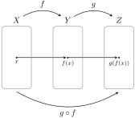

We begin this section with a method for combining two functions together that have compatible domains and codomains.
Definition8.54.
If \(f:X\to Y\) and \(g:Y\to Z\) are functions, we define \(g\circ f:X\to Z\) via \(\tcboxmath{(g\circ f)(x)=g(f(x))}\text{.}\) The function \(g\circ f\) is called the composition of \(f\) and \(g\text{.}\)
It is important to notice that the function on the right is the one that “goes first.” Moreover, we cannot compose any two random functions since the codomain of the first function must agree with the domain of the second function. In particular, \(f\circ g\) may not be a sensible function even when \(g\circ f\) exists. Figure 8.55 provides a visual representation of function composition in terms of function diagrams.

Figure8.55.Visual representation of function composition.
Problem8.56.
Let \(X=\{1,2,3,4\}\) and define \(f:X\to X\) and \(g:X\to X\) via
For each of the following functions, draw the corresponding function diagram in the spirit of Figure 8.55 and identify the range.
\(\displaystyle g\circ f\)
\(\displaystyle f\circ g\)
The previous problem illustrates that \(f\circ g\) and \(g\circ f\) need not be equal even when both composite functions exist.
Example8.57.
Consider the inclusion map \(\iota:X\to Y\) such that \(X\) is a proper subset of \(Y\) and suppose \(f:Y\to Z\) is a function. Then the composite function \(f\circ \iota:X\to Z\) is given by
for all \(x\in X\text{.}\) Notice that \(f\circ \iota\) is simply the function \(f\) but with a smaller domain. In this case, we say that \(f\circ \iota\) is the restriction of \(f\) to \(X\), which is often denoted by \(\tcboxmath{f|_X}\text{.}\)
Problem8.58.
Define \(f:\mathbb{R}\to \mathbb{R}\) and \(g:\mathbb{R}\to \mathbb{R}\) via \(f(x)=x^2\) and \(g(x)=3x-5\text{,}\) respectively. Determine formulas for the composite functions \(f\circ g\) and \(g\circ f\text{.}\)
Problem8.59.
Define \(f:\mathbb{R}\to \mathbb{R}\) and \(g:\mathbb{R}\to \mathbb{R}\) via
\begin{equation*}
f(x)=\begin{cases}5x+7, \amp \text{ if } x\lt 0\\ 2x+1, \amp \text{ if } x\geq 0 \end{cases}
\end{equation*}
and \(g(x)=7x-11\text{,}\) respectively. Find a formula for the composite function \(g\circ f\text{.}\)
Problem8.60.
Define \(f:\mathbb{Z}/15\mathbb{Z}\to \mathbb{Z}/23\mathbb{Z}\) and \(g:\mathbb{Z}/23\mathbb{Z}\to \mathbb{Z}/32\mathbb{Z}\) via \(f([x]_{15})=[3x+5]_{23}\) and \(g([x]_{23})=[2x+1]_{32}\text{,}\) respectively. Find a formula for the composite function \(g\circ f\text{.}\)
The following result provides some insight into where the identity map got its name.
Theorem8.61.
If \(f:X\to Y\) is a function, then \(f\circ i_X = f = i_Y\circ f\text{,}\) where \(i_X\) and \(i_Y\) are the identity maps on \(X\) and \(Y\text{,}\) respectively.
The next theorem tells us that function composition is associative.
Theorem8.62.
If \(f:X\to Y\text{,}\)\(g:Y\to Z\text{,}\) and \(h:Z\to W\) are functions, then \((h\circ g)\circ f = h\circ (g\circ f)\text{.}\)
Problem8.63.
In each case, give examples of finite sets \(X\text{,}\)\(Y\text{,}\) and \(Z\text{,}\) and functions \(f:X\to Y\) and \(g:Y\to Z\) that satisfy the given conditions. Drawing a function diagram is sufficient.
\(f\) is surjective, but \(g\circ f\) is not surjective.
\(g\) is surjective, but \(g\circ f\) is not surjective.
\(f\) is injective, but \(g\circ f\) is not injective.
\(g\) is injective, but \(g\circ f\) is not injective.
Theorem8.64.
If \(f:X\to Y\) and \(g:Y\to Z\) are both surjective functions, then \(g\circ f\) is also surjective.
Theorem8.65.
If \(f:X\to Y\) and \(g:Y\to Z\) are both injective functions, then \(g\circ f\) is also injective.
Corollary8.66.
If \(f:X\to Y\) and \(g:Y\to Z\) are both bijections, then \(g\circ f\) is also a bijection.
Problem8.67.
Assume that \(f:X\to Y\) and \(g:Y\to Z\) are both functions. Determine whether each of the following statements is true or false. If a statement is true, prove it. Otherwise, provide a counterexample.
If \(g\circ f\) is injective, then \(f\) is injective.
If \(g\circ f\) is injective, then \(g\) is injective.
If \(g\circ f\) is surjective, then \(f\) is surjective.
If \(g\circ f\) is surjective, then \(g\) is surjective.
Theorem8.68.
Let \(f:X\to Y\) be a function. Then \(f\) is injective if and only if there exists a function \(g:Y\to X\) such that \(g\circ f=i_X\text{,}\) where \(i_X\) is the identity map on \(X\text{.}\)
The function \(g\) in the previous theorem is often called a left inverse of \(f\text{.}\)
Theorem8.69.
Let \(f:X\to Y\) be a function. Then \(f\) is surjective if and only if there exists a function \(g:Y\to X\) such that \(f\circ g=i_Y\text{,}\) where \(i_Y\) is the identity map on \(Y\text{.}\)
The function \(g\) in the previous theorem is often called a right inverse of \(f\text{.}\)
Problem8.70.
Complete each of the following. Consider using finite sets and drawing a function diagram to define your functions.
Provide an example of a function that has a left inverse but does not have a right inverse. Find the left inverse of your proposed function.
Provide an example of a function that has a right inverse but does not have a left inverse. Find the right inverse of your proposed function.
Problem8.71.
Define \(f:\mathbb{R}\to\mathbb{R}\) via \(f(x)=x^2\text{.}\) Explain why \(f\) does not have a left inverse nor a right inverse.
Problem8.72.
Define \(f:\mathbb{R}\to[0,\infty)\) via \(f(x)=x^2\) and \(g:[0,\infty)\to \mathbb{R}\) via \(g(x)=\sqrt{x}\text{.}\)
Explain why \(f\) does not have a left inverse.
Verify that \(g\) is the right inverse of \(f\) by computing \(f\circ g(x)\text{.}\)
Corollary8.73.
If \(f:X\to Y\) and \(g:Y\to X\) are functions satisfying \(g\circ f=i_X\) and \(f\circ g=i_Y\text{,}\) then \(f\) is a bijection.
In the previous result, the functions \(f\) and \(g\) “cancel” each other out. In this case, we say that \(g\) is a two-sided inverse of \(f\text{.}\)
Definition8.74.
Let \(f:X\to Y\) be a function. The relation \(f^{-1}\) from \(Y\) to \(X\text{,}\) called \(f\) inverse, is defined via
Notice that we called \(f^{-1}\) a relation and not a function. In some circumstances \(f^{-1}\) will be a function and sometimes it will not be. Given a function \(f\text{,}\) the inverse relation is simply the set of ordered pairs that results from reversing the ordered pairs in \(f\text{.}\) It is worth pointing out that we have only defined inverse relations for functions. However, one can easily adapt our definition to handle arbitrary relations.
Problem8.75.
Consider the function \(f\) given in Example 8.2 (see Figure 8.3). List the ordered pairs in the relation \(f^{-1}\) and draw the corresponding digraph. Is \(f^{-1}\) a function?
Problem8.76.
Provide an example of a function \(f:X\to Y\) such that \(f^{-1}\) is a function. Drawing a function diagram is sufficient.
Problem8.77.
Suppose \(X\subseteq \mathbb{R}\) and \(f:X\to \mathbb{R}\) is a function. What is the relationship between the graph of the function \(f\) and the graph of the inverse relation \(f^{-1}\text{?}\)
Theorem8.78.
Let \(f:X\to Y\) be a function. Then \(f^{-1}:Y\to X\) is a function if and only if \(f\) is a bijection.
Problem8.79.
Suppose \(f:\mathbb{R}\to \mathbb{R}\) is a function. Fill in the blank with the appropriate phrase.
The relation \(f^{-1}\) is a function if and only if every horizontal line hits the graph of \(f\).
Explain why this statement is true.
Theorem8.80.
If \(f:X\to Y\) is a bijection, then
\(f^{-1}\circ f=i_X\text{,}\) and
\(f\circ f^{-1}=i_Y\text{.}\)
Theorem8.81.
If \(f:X\to Y\) is a bijection, then \(f^{-1}:Y\to X\) is also a bijection.
Theorem8.82.
If \(f:X\to Y\) and \(g:Y\to X\) are functions such that \(g\circ f=i_X\) and \(f\circ g=i_Y\text{,}\) then \(f^{-1}\) is a function and \(g=f^{-1}\text{.}\)
The upshot of Theorems 8.80 and Theorem 8.82 is that if \(f^{-1}\) is a function, then it is the only one satisfying the two-sided inverse property exhibited in Corollary 8.73 and Theorem 8.80. That is, inverse functions are unique when they exist. When the relation \(f^{-1}\) is a function, we call it the inverse function of \(f\text{.}\)
Problem8.83.
Let \(X\subseteq\mathbb{R}\) and suppose \(f:X\to\mathbb{R}\) is a function. Explain the difference between \(f^{-1}(x)\) and \([f(x)]^{-1}\text{.}\) When does each exist?
Problem8.84.
Let \(X,Y\subseteq\mathbb{R}\) and define \(f:X\to Y\) via \(f(x)=e^x\) and \(g:Y\to X\) via \(g(x)=\ln(x)\text{.}\) Identify the largest possible choices for \(X\) and \(Y\) so that \(f\) and \(g\) are inverses of each other.
Theorem8.85.
If \(f:X\to Y\) is a bijection, then \((f^{-1})^{-1}=f\text{.}\)
In the previous theorem, we restricted our attention to bijections so that \(f^{-1}\) would be a function, thus making \((f^{-1})^{-1}\) a sensible inverse relation in light of Definition 8.74. If we had defined inverses for arbitrary relations, then we would not have needed to require the function in Theorem 8.85 to be a bijection. In fact, we do not even need to require the relation to be a function. That is, if \(R\) is a relation from \(X\) to \(Y\text{,}\) then \((R^{-1})^{-1}=R\text{,}\) as expected. Similarly, the next result generalizes to arbitrary relations.
Theorem8.86.
If \(f:X\to Y\) and \(g:Y\to Z\) are both bijections, then \((g\circ f)^{-1}=f^{-1}\circ g^{-1}\text{.}\)
The previous theorem is sometimes referred to as the “socks and shoes theorem”. Do you see how it got this name?
The most difficult thing is the decision to act. The rest is merely tenacity.